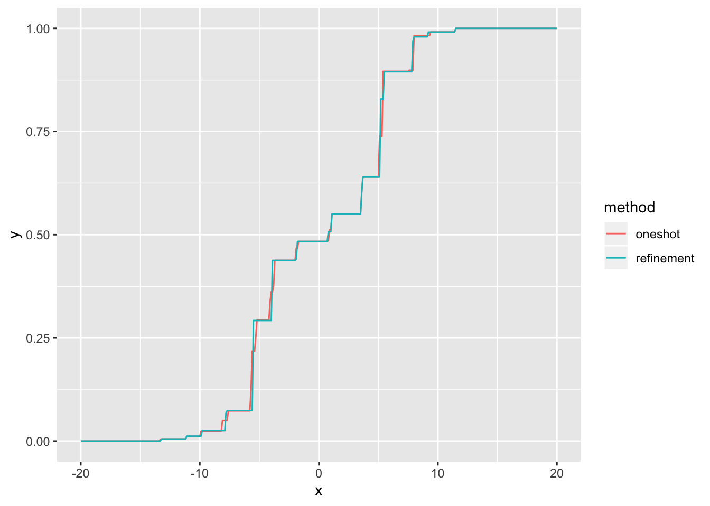
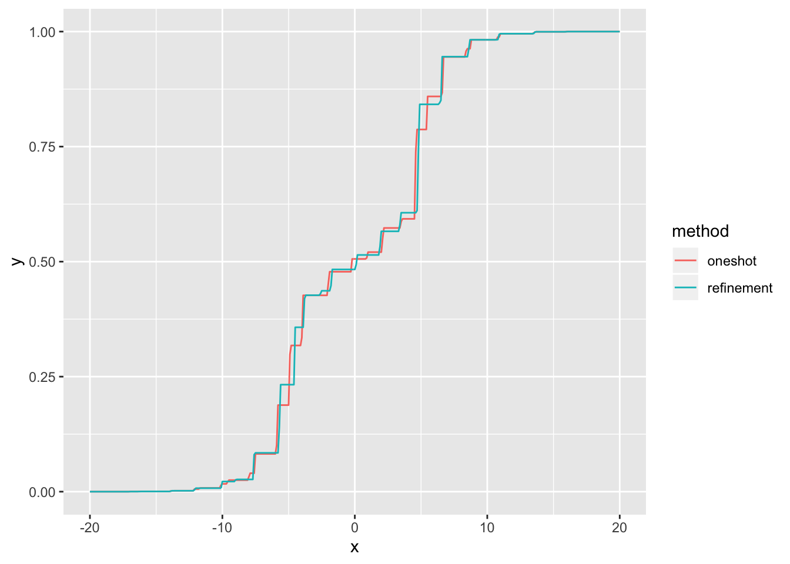

Last updated: 2020-05-11
Checks: 6 0
Knit directory: FLASHvestigations/
This reproducible R Markdown analysis was created with workflowr (version 1.2.0). The Report tab describes the reproducibility checks that were applied when the results were created. The Past versions tab lists the development history.
Great! Since the R Markdown file has been committed to the Git repository, you know the exact version of the code that produced these results.
Great job! The global environment was empty. Objects defined in the global environment can affect the analysis in your R Markdown file in unknown ways. For reproduciblity it’s best to always run the code in an empty environment.
The command set.seed(20180714) was run prior to running the code in the R Markdown file. Setting a seed ensures that any results that rely on randomness, e.g. subsampling or permutations, are reproducible.
Great job! Recording the operating system, R version, and package versions is critical for reproducibility.
Nice! There were no cached chunks for this analysis, so you can be confident that you successfully produced the results during this run.
Great! You are using Git for version control. Tracking code development and connecting the code version to the results is critical for reproducibility. The version displayed above was the version of the Git repository at the time these results were generated.
Note that you need to be careful to ensure that all relevant files for the analysis have been committed to Git prior to generating the results (you can use wflow_publish or wflow_git_commit). workflowr only checks the R Markdown file, but you know if there are other scripts or data files that it depends on. Below is the status of the Git repository when the results were generated:
Ignored files:
Ignored: .DS_Store
Ignored: .Rhistory
Ignored: .Rproj.user/
Ignored: analysis/.DS_Store
Ignored: code/.DS_Store
Ignored: code/flashier_bench/.DS_Store
Ignored: data/.DS_Store
Ignored: data/flashier_bench/
Ignored: data/metabo3_gwas_mats.RDS
Ignored: output/jean/
Untracked files:
Untracked: analysis/batting_order.Rmd
Untracked: code/fasfunction.R
Untracked: code/nnmf.R
Untracked: code/wals.R
Untracked: data/BR_teams_2019.csv
Untracked: data/FG_teams_2019.csv
Untracked: data/batting_order.rds
Untracked: data/cole.rds
Untracked: data/odorizzi.rds
Untracked: data/pitcher.rds
Untracked: data/pitcher2.rds
Untracked: data/pitcher_all.rds
Untracked: mlb2.R
Untracked: mlb_standings.txt
Untracked: ottoneu.R
Untracked: phoible.R
Note that any generated files, e.g. HTML, png, CSS, etc., are not included in this status report because it is ok for generated content to have uncommitted changes.
These are the previous versions of the R Markdown and HTML files. If you’ve configured a remote Git repository (see ?wflow_git_remote), click on the hyperlinks in the table below to view them.
| File | Version | Author | Date | Message |
|---|---|---|---|---|
| Rmd | 305975d | Jason Willwerscheid | 2020-05-11 | wflow_publish(“analysis/ebnm_npmle3.Rmd”) |
| html | 03d03cf | Jason Willwerscheid | 2020-05-11 | Build site. |
| Rmd | 2425abd | Jason Willwerscheid | 2020-05-11 | wflow_publish(“analysis/ebnm_npmle3.Rmd”) |
| html | c70f0b9 | Jason Willwerscheid | 2020-05-10 | Build site. |
| Rmd | edb3695 | Jason Willwerscheid | 2020-05-10 | wflow_publish(“analysis/ebnm_npmle3.Rmd”) |
Here’s an idea for approximating a dense-grid NPMLE without using hundreds of components: estimate using a small number of components (30 or so); throw out the zero components and cut the remaining components in half; re-estimate; repeat as needed. In most cases, the NPMLE is a relatively small number of point masses. My hope is that a coarse grid can find the correct regions of support and can subsequently be refined down to (approximate) point masses.
I use the same distribution as I did in my first NPMLE investigation. I begin with a sample of 1000 observations.
suppressMessages(library(tidyverse))
true_g <- ashr::normalmix(pi = rep(0.1, 10),
mean = c(rep(-5, 5), rep(5, 5)),
sd = c(0:4, 0:4))
cdf_grid <- seq(-20, 20, by = 0.1)
samp_from_g <- function(g, n) {
comp <- sample(1:length(g$pi), n, replace = TRUE, prob = g$pi)
mean <- g$mean[comp]
sd <- g$sd[comp]
return(rnorm(n, mean = mean, sd = sd))
}
set.seed(666)
n <- 1000
samp <- samp_from_g(true_g, n) + rnorm(n)I approximate the NPMLE using the “refinement” method described above.
refine_g <- function(g) {
comp_len <- g$b[1] - g$a[1]
nz_comp <- which(g$pi > 1e-8)
g_new <- ashr::unimix(pi = rep(g$pi[nz_comp] / 2, each = 2),
a = rep(g$a[nz_comp], each = 2),
b = rep(g$b[nz_comp], each = 2))
g_new$a[2 * 1:length(nz_comp)] <- g_new$a[2 * 1:length(nz_comp)] + comp_len / 2
g_new$b[2 * 1:length(nz_comp) - 1] <- g_new$a[2 * 1:length(nz_comp) - 1] + comp_len / 2
return(g_new)
}
tol <- 0.05
t_refine <- system.time({
ncomp <- 30
comp_len <- (max(samp) - min(samp)) / ncomp
g_init <- ashr::unimix(pi = rep(1 / ncomp, ncomp),
a = min(samp) + 0:(ncomp - 1) * comp_len,
b = min(samp) + 1:ncomp * comp_len)
ebnm_res <- ebnm::ebnm_npmle(samp, g_init = g_init)
comp_len <- ebnm_res$fitted_g$b[1] - ebnm_res$fitted_g$a[1]
while (comp_len > tol) {
g_init <- refine_g(ebnm_res$fitted_g)
ebnm_res <- ebnm::ebnm_npmle(samp, g_init = g_init)
comp_len <- ebnm_res$fitted_g$b[1] - ebnm_res$fitted_g$a[1]
cat("Component length:", round(comp_len, 3),
" Log Likelihood:", ebnm_res$log_likelihood, "\n")
}
})#> Component length: 0.455 Log Likelihood: -2899.229
#> Component length: 0.227 Log Likelihood: -2899.175
#> Component length: 0.114 Log Likelihood: -2899.099
#> Component length: 0.057 Log Likelihood: -2899.086
#> Component length: 0.028 Log Likelihood: -2899.081cat("Elapsed time (refinement method):", t_refine[3], "seconds \n\n")#> Elapsed time (refinement method): 1.059 secondsThe log likelihood doesn’t change much; in this example, it would probably suffice to just use the initial 30-component estimate.
Now I estimate the NPMLE using a dense grid with components that have the same length as the final estimate obtained using the refinement method. There are \(30 \times 2^4 = 480\) components, so estimation is slow. I’ll call this the “one-shot” method.
t_oneshot <- system.time({
ncomp <- round((max(samp) - min(samp)) / comp_len)
g_init <- ashr::unimix(pi = rep(1 / ncomp, ncomp),
a = min(samp) + 0:(ncomp - 1) * comp_len,
b = min(samp) + 1:ncomp * comp_len)
ebnm_res2 <- ebnm::ebnm_npmle(samp, g_init = g_init)
comp_len <- ebnm_res2$fitted_g$b[1] - ebnm_res2$fitted_g$a[1]
cat("Component length:", round(comp_len, 3),
"Log Likelihood:", ebnm_res2$log_likelihood, "\n")
})#> Component length: 0.028 Log Likelihood: -2899.108cat("Elapsed time (one-shot method):", t_oneshot[3], "seconds \n")#> Elapsed time (one-shot method): 253.49 secondsIt’s very slow, as I’d expect. More surprisingly, the log likelihood is a bit worse. Visually, the CDFs are nearly identical:
res_list <- list(ebnm_res, ebnm_res2)
cdf_df <- tibble(x = rep(cdf_grid, length(res_list)),
y = as.vector(sapply(res_list,
function(res) drop(ashr::mixcdf(res$fitted_g, cdf_grid)))),
method = (rep(c("refinement", "oneshot"), each = length(cdf_grid))))
ggplot(cdf_df, aes(x = x, y = y, col = method)) +
geom_line()
| Version | Author | Date |
|---|---|---|
| c70f0b9 | Jason Willwerscheid | 2020-05-10 |
I repeat with a larger sample (\(n = 10000\)).
set.seed(666)
n <- 10000
samp <- samp_from_g(true_g, n) + rnorm(n, sd = 1)
tol <- 0.1
t_refine <- system.time({
ncomp <- 30
comp_len <- (max(samp) - min(samp)) / ncomp
g_init <- ashr::unimix(pi = rep(1 / ncomp, ncomp),
a = min(samp) + 0:(ncomp - 1) * comp_len,
b = min(samp) + 1:ncomp * comp_len)
ebnm_res <- ebnm::ebnm_npmle(samp, g_init = g_init)
comp_len <- ebnm_res$fitted_g$b[1] - ebnm_res$fitted_g$a[1]
while (comp_len > tol) {
g_init <- refine_g(ebnm_res$fitted_g)
ebnm_res <- ebnm::ebnm_npmle(samp, g_init = g_init)
comp_len <- ebnm_res$fitted_g$b[1] - ebnm_res$fitted_g$a[1]
cat("Component length:", round(comp_len, 3),
" Log Likelihood:", ebnm_res$log_likelihood, "\n")
}
})#> Component length: 0.585 Log Likelihood: -29195.45
#> Component length: 0.293 Log Likelihood: -29194.96
#> Component length: 0.146 Log Likelihood: -29194.83
#> Component length: 0.073 Log Likelihood: -29194.79cat("Elapsed time (refinement method):", t_refine[3], "seconds \n\n")#> Elapsed time (refinement method): 8.828 seconds
t_oneshot <- system.time({
ncomp <- round((max(samp) - min(samp)) / comp_len)
g_init <- ashr::unimix(pi = rep(1 / ncomp, ncomp),
a = min(samp) + 0:(ncomp - 1) * comp_len,
b = min(samp) + 1:ncomp * comp_len)
ebnm_res2 <- ebnm::ebnm_npmle(samp, g_init = g_init)
comp_len <- ebnm_res2$fitted_g$b[1] - ebnm_res2$fitted_g$a[1]
cat("Component length:", round(comp_len, 3),
"Log Likelihood:", ebnm_res2$log_likelihood, "\n")
})#> Component length: 0.073 Log Likelihood: -29194.99cat("Elapsed time (one-shot method):", t_oneshot[3], "seconds \n")#> Elapsed time (one-shot method): 32.457 seconds
res_list <- list(ebnm_res, ebnm_res2)
cdf_df <- tibble(x = rep(cdf_grid, length(res_list)),
y = as.vector(sapply(res_list,
function(res) drop(ashr::mixcdf(res$fitted_g, cdf_grid)))),
method = (rep(c("refinement", "oneshot"), each = length(cdf_grid))))
ggplot(cdf_df, aes(x = x, y = y, col = method)) +
geom_line()
| Version | Author | Date |
|---|---|---|
| c70f0b9 | Jason Willwerscheid | 2020-05-10 |
The log likelihood of the one-shot method is again a bit worse. I check both results by removing the zero components, aligning the grids (there are differences of about 1e-13 in the endpoints) and re-estimating. This should reduce the rounding error.
nz_comp <- which(ebnm_res$fitted_g$pi > 1e-8)
g_init <- ashr::unimix(pi = ebnm_res$fitted_g$pi[nz_comp],
a = ebnm_res$fitted_g$a[nz_comp],
b = ebnm_res$fitted_g$b[nz_comp])
mids <- (g_init$a + g_init$b) / 2
g_init$a <- ebnm_res2$fitted_g$a[sapply(mids, function(x) max(which(ebnm_res2$fitted_g$a < x)))]
g_init$b <- ebnm_res2$fitted_g$b[sapply(mids, function(x) min(which(ebnm_res2$fitted_g$b > x)))]
ebnm_res_check <- ebnm::ebnm_npmle(samp, g_init = g_init)
cat("Log likelihood (refinement method):", ebnm_res_check$log_likelihood, "\n")#> Log likelihood (refinement method): -29194.79
nz_comp <- which(ebnm_res2$fitted_g$pi > 1e-8)
g_init2 <- ashr::unimix(pi = ebnm_res2$fitted_g$pi[nz_comp],
a = ebnm_res2$fitted_g$a[nz_comp],
b = ebnm_res2$fitted_g$b[nz_comp])
ebnm_res_check2 <- ebnm::ebnm_npmle(samp, g_init = g_init2)
cat("Log likelihood (one-shot method):", ebnm_res_check2$log_likelihood, "\n")#> Log likelihood (one-shot method): -29194.99So it’s not simply numerical error. I’m not sure what’s going on here, but mixsqp is not finding the best solution. I provide the verbose output of the two checks for inspection.
g_init <- ashr::unimix(pi = rep(1 / ncomp, ncomp),
a = min(samp) + 0:(ncomp - 1) * comp_len,
b = min(samp) + 1:ncomp * comp_len)
ebnm_res2 <- ebnm::ebnm_npmle(samp, g_init = g_init, control = list(verbose = TRUE))#> Running mix-SQP algorithm 0.3-40 on 10000 x 480 matrix
#> convergence tol. (SQP): 1.0e-08
#> conv. tol. (active-set): 1.0e-10
#> zero threshold (solution): 1.0e-08
#> zero thresh. (search dir.): 1.0e-14
#> l.s. sufficient decrease: 1.0e-02
#> step size reduction factor: 7.5e-01
#> minimum step size: 1.0e-08
#> max. iter (SQP): 1000
#> max. iter (active-set): 20
#> number of EM iterations: 20
#> Computing SVD of 10000 x 480 matrix.
#> SVD computation took 3.70 seconds.
#> Rank of matrix is estimated to be 69.
#> iter objective max(rdual) nnz stepsize max.diff nqp nls
#> 1 +2.026193858e+00 -- EM -- 480 1.00e+00 4.47e-03 -- --
#> 2 +2.007734789e+00 -- EM -- 480 1.00e+00 1.39e-03 -- --
#> 3 +2.004349193e+00 -- EM -- 480 1.00e+00 7.07e-04 -- --
#> 4 +2.003078053e+00 -- EM -- 480 1.00e+00 4.44e-04 -- --
#> 5 +2.002391879e+00 -- EM -- 480 1.00e+00 3.21e-04 -- --
#> 6 +2.001962914e+00 -- EM -- 480 1.00e+00 2.53e-04 -- --
#> 7 +2.001676052e+00 -- EM -- 480 1.00e+00 2.10e-04 -- --
#> 8 +2.001475671e+00 -- EM -- 480 1.00e+00 1.79e-04 -- --
#> 9 +2.001330547e+00 -- EM -- 480 1.00e+00 1.56e-04 -- --
#> 10 +2.001221896e+00 -- EM -- 480 1.00e+00 1.37e-04 -- --
#> 11 +2.001137966e+00 -- EM -- 480 1.00e+00 1.23e-04 -- --
#> 12 +2.001071191e+00 -- EM -- 480 1.00e+00 1.10e-04 -- --
#> 13 +2.001016590e+00 -- EM -- 480 1.00e+00 1.00e-04 -- --
#> 14 +2.000970817e+00 -- EM -- 480 1.00e+00 9.15e-05 -- --
#> 15 +2.000931585e+00 -- EM -- 480 1.00e+00 8.42e-05 -- --
#> 16 +2.000897301e+00 -- EM -- 480 1.00e+00 7.80e-05 -- --
#> 17 +2.000866845e+00 -- EM -- 480 1.00e+00 7.26e-05 -- --
#> 18 +2.000839410e+00 -- EM -- 480 1.00e+00 6.80e-05 -- --
#> 19 +2.000814413e+00 -- EM -- 480 1.00e+00 6.39e-05 -- --
#> 20 +2.000791421e+00 -- EM -- 480 1.00e+00 6.04e-05 -- --
#> 1 +2.000770112e+00 +2.796e-02 480 ------ ------ -- --
#> 2 +2.000750169e+00 +2.741e-02 460 1.00e+00 5.83e-05 20 1
#> 3 +2.000731553e+00 +2.537e-02 440 1.00e+00 5.66e-05 20 1
#> 4 +2.000714062e+00 +1.930e-02 420 1.00e+00 5.98e-05 20 1
#> 5 +2.000697565e+00 +1.856e-02 400 1.00e+00 2.00e-04 20 1
#> 6 +2.000682002e+00 +1.782e-02 380 1.00e+00 3.64e-04 20 1
#> 7 +2.000667257e+00 +1.704e-02 360 1.00e+00 1.00e-03 20 1
#> 8 +2.000653235e+00 +1.623e-02 340 1.00e+00 6.93e-04 20 1
#> 9 +2.000639866e+00 +1.543e-02 320 1.00e+00 7.96e-04 20 1
#> 10 +2.000627113e+00 +1.465e-02 300 1.00e+00 1.59e-03 20 1
#> 11 +2.000614954e+00 +1.390e-02 280 1.00e+00 2.68e-03 20 1
#> 12 +2.000603340e+00 +1.319e-02 260 1.00e+00 1.18e-03 20 1
#> 13 +2.000592233e+00 +1.251e-02 240 1.00e+00 2.37e-03 20 1
#> 14 +2.000581604e+00 +1.186e-02 220 1.00e+00 2.31e-03 20 1
#> 15 +2.000571437e+00 +1.123e-02 200 1.00e+00 5.85e-03 20 1
#> 16 +2.000561726e+00 +1.065e-02 180 1.00e+00 3.52e-03 20 1
#> 17 +2.000552436e+00 +1.010e-02 160 1.00e+00 5.22e-03 20 1
#> 18 +2.000543542e+00 +9.583e-03 140 1.00e+00 6.72e-03 20 1
#> 19 +2.000535009e+00 +9.104e-03 120 1.00e+00 6.37e-03 20 1
#> 20 +2.000526753e+00 +8.873e-03 100 1.00e+00 1.14e-02 20 1
#> 21 +2.000518668e+00 +8.781e-03 80 1.00e+00 2.34e-02 20 1
#> 22 +2.000510654e+00 +7.631e-03 60 1.00e+00 3.91e-02 20 1
#> 23 +2.000486484e+00 +7.335e-03 40 1.00e+00 1.11e-01 20 1
#> 24 +2.000139561e+00 +1.858e-03 28 1.00e+00 1.36e-01 20 1
#> 25 +2.000115418e+00 +2.200e-04 27 1.00e+00 1.14e-02 20 1
#> 26 +2.000100938e+00 -5.719e-06 27 1.00e+00 3.03e-02 20 1
#> Optimization took 22.88 seconds.
#> Convergence criteria met---optimal solution found.
sessionInfo()#> R version 3.5.3 (2019-03-11)
#> Platform: x86_64-apple-darwin15.6.0 (64-bit)
#> Running under: macOS Mojave 10.14.6
#>
#> Matrix products: default
#> BLAS: /Library/Frameworks/R.framework/Versions/3.5/Resources/lib/libRblas.0.dylib
#> LAPACK: /Library/Frameworks/R.framework/Versions/3.5/Resources/lib/libRlapack.dylib
#>
#> locale:
#> [1] en_US.UTF-8/en_US.UTF-8/en_US.UTF-8/C/en_US.UTF-8/en_US.UTF-8
#>
#> attached base packages:
#> [1] stats graphics grDevices utils datasets methods base
#>
#> other attached packages:
#> [1] forcats_0.4.0 stringr_1.4.0 dplyr_0.8.0.1 purrr_0.3.2
#> [5] readr_1.3.1 tidyr_0.8.3 tibble_2.1.1 ggplot2_3.2.0
#> [9] tidyverse_1.2.1
#>
#> loaded via a namespace (and not attached):
#> [1] tidyselect_0.2.5 xfun_0.6 ashr_2.2-50
#> [4] haven_2.1.1 lattice_0.20-38 colorspace_1.4-1
#> [7] generics_0.0.2 htmltools_0.3.6 yaml_2.2.0
#> [10] rlang_0.4.2 mixsqp_0.3-40 pillar_1.3.1
#> [13] glue_1.3.1 withr_2.1.2 modelr_0.1.5
#> [16] readxl_1.3.1 munsell_0.5.0 gtable_0.3.0
#> [19] workflowr_1.2.0 cellranger_1.1.0 rvest_0.3.4
#> [22] evaluate_0.13 labeling_0.3 knitr_1.22
#> [25] invgamma_1.1 irlba_2.3.3 broom_0.5.1
#> [28] Rcpp_1.0.1 scales_1.0.0 backports_1.1.3
#> [31] jsonlite_1.6 truncnorm_1.0-8 fs_1.2.7
#> [34] hms_0.4.2 digest_0.6.18 stringi_1.4.3
#> [37] ebnm_0.1-21 grid_3.5.3 rprojroot_1.3-2
#> [40] cli_1.1.0 tools_3.5.3 magrittr_1.5
#> [43] lazyeval_0.2.2 crayon_1.3.4 whisker_0.3-2
#> [46] pkgconfig_2.0.2 Matrix_1.2-15 SQUAREM_2017.10-1
#> [49] xml2_1.2.0 lubridate_1.7.4 assertthat_0.2.1
#> [52] rmarkdown_1.12 httr_1.4.0 rstudioapi_0.10
#> [55] R6_2.4.0 nlme_3.1-137 git2r_0.25.2
#> [58] compiler_3.5.3